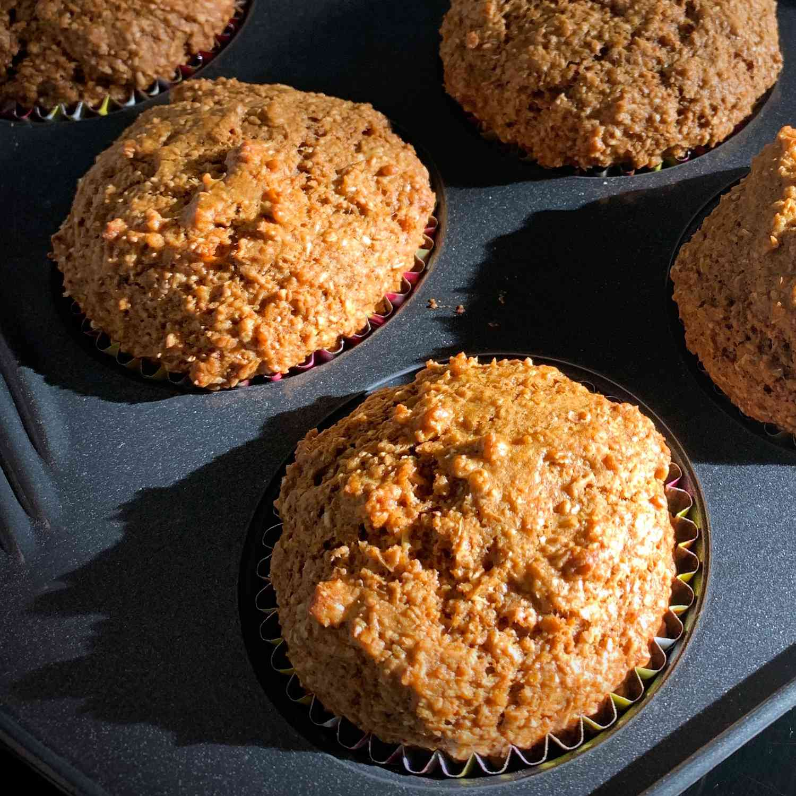

All Bran Muffins
Back to the kitchen

Description
Healthy, sweet, and delicious. These All-Bran muffins will be the perfect way to end your meal.
Here we will show you exactly how to make them from scratch.
Ingredients
- 1 1/4 cups all purpose flower
- 1/2 cup sugar
- 1 tbsp baking powder
- 1/4 tsp salt
- 2 cups Kellog's All-Bran cereal (or alternative)
- 1 1/4 cups milk
- 1 egg
- 1/4 cup vegetable oil
- Optional: chocolate chips, cinammon, or any alternative
Steps
- Stir together flour, sugar, baking powder and salt. Set aside.
- In large mixing bowl, combine KELLOGG'S ALL-BRAN cereal and milk. Let stand about 2 minutes or until cereal softens. Add egg and oil. Beat well. Add flour mixture, stirring only until combined. Portion evenly into twelve 2 1/2-inch muffin pan cups coated with cooking spray.
- Bake at 400° F about 20 minutes or until golden brown. Cool 10 minutes. Serve warm.